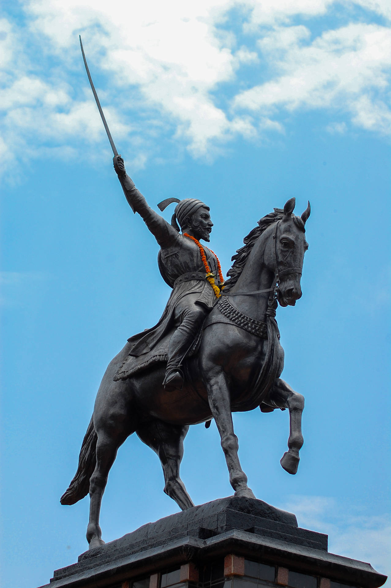

This is tab one story of animals

In a dense forest, a wise old elephant named Elgo was respected by all animals. One day, a
terrible drought struck, and the animals grew desperate. Elgo remembered an ancient river
hidden deep in the jungle. He led the herd through thorns and heat until they found the
flowing water. The forest rejoiced, and Elgo became a legend of unity and courage.
This is tab two story of burd

High above the mountains, a little sparrow named Sia dreamed of flying beyond the clouds.
Laughed at by other birds, she practiced every day. One stormy afternoon, an eagle got
trapped on a cliff. Sia, using her small wings and big courage, guided help to save him. The
birds no longer laughed. Sia proved even the smallest wings can soar the highest.
This is tab three story of robots
In the year 3020, a robot named Zino worked in a scrapyard. He longed to see the stars.
Using broken parts and ancient blueprints, Zino built a tiny spaceship. Though everyone
doubted him, Zino launched into space one night, leaving behind sparks of hope. He became
the first robot explorer, showing machines can dream too.
This is tab four story of humans

Long ago in a desert village, a young boy named Aarav loved books. While others sought
treasure, he read every scroll he found. One day, a sandstorm unearthed a hidden cave full
of ancient knowledge. Aarav shared this wisdom, teaching his people to build, grow, and
thrive. The village turned into a great city, all because of one curious human.